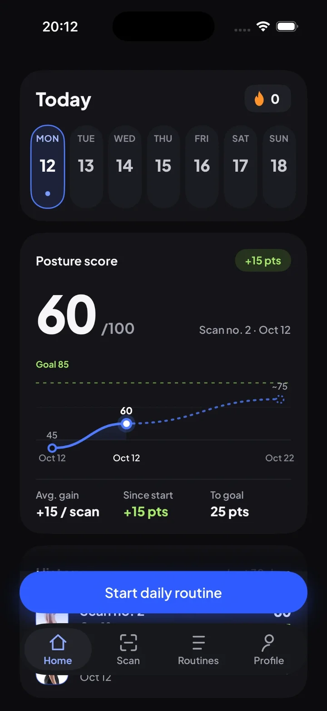
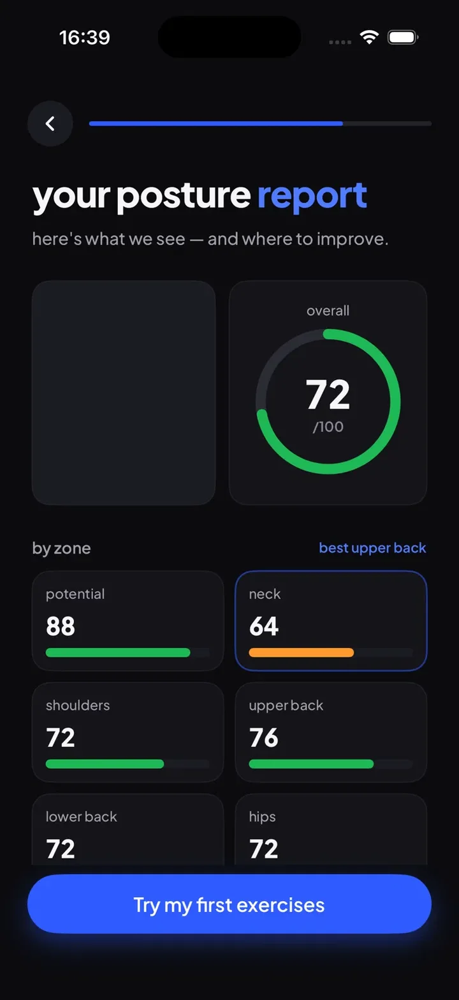
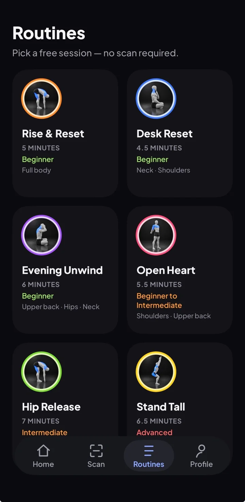
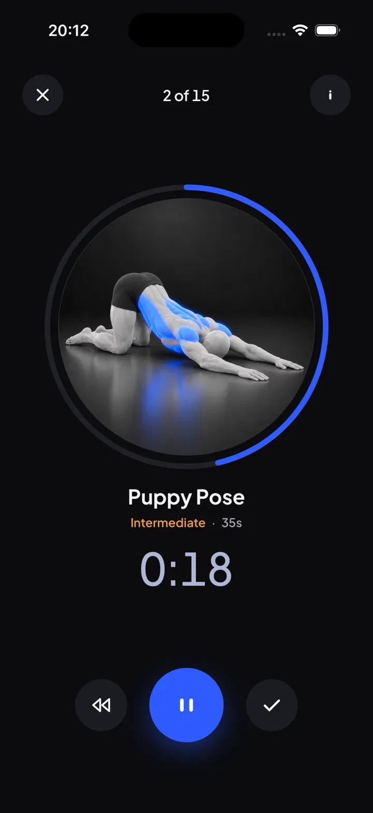
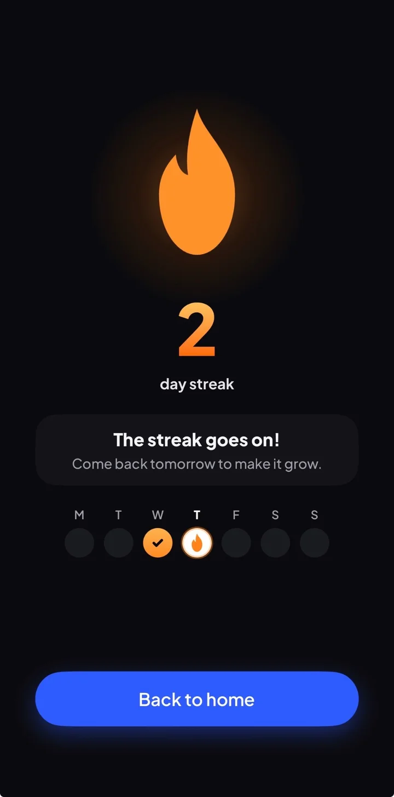

InchUp
Scan your posture. Follow a routine. Raise your score.
Take one side-profile photo, get a clear posture report by body zone, and follow a short routine tailored to your weak points, so you stand a little taller every day.
Download on theApp StoreInside the app





How it works
1
Scan
Frame your side profile, keep your phone level, and capture a photo.
2
Report
See scores for head, neck, shoulders, back and hips, with your weak points highlighted.
3
Routine
Follow targeted exercises in short, timed sessions — with optional daily reminders.
Everything you need to improve
- Photo-based posture analysis (side profile)
- Overall and per-zone posture scores
- Personalized routine based on your results
- Guided, timed exercise sessions
- Scan history and streak tracking
- Sign in with email, Apple or Google
- Scan photos stored on your device
- Free trial, then monthly or yearly plan via Apple
InchUp is a wellness tool designed to build body awareness and consistent exercise habits. It is not a medical device and does not replace advice from a healthcare professional.